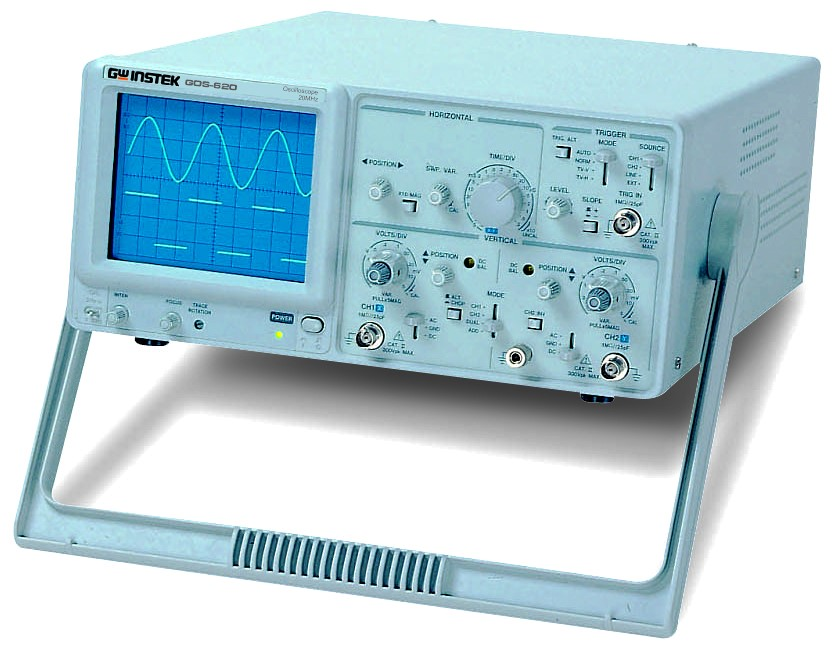

אוסילוסקופ אנלוגי מבוסס על שפופרת קרן קתודית (CRT - Cathode Ray Tube). תותח אלקטרונים בחלקו האחורי של המכשיר יורה אלומת אלקטרונים ממוקדת לעבר מסך המצופה חומר זרחני הפולט אור בפגיעה. לוחות פיזור אלקטרוסטטיים פנימיים (אנכיים ואופקיים) מסיטים את אלומה זו בהתאם למתח הכניסה הנמדד (לציר האנכי, \( Y \)) ומתח השן-משור הפנימי הקובע את קצב הסריקה בזמן (לציר האופקי, \( X \)).
מכשיר ה-GOS-620 מציע רוחב פס של \( 20\text{ MHz} \) ועבודה דו-ערוצית. השימוש בו אידיאלי להוראת יסודות משום שאין תיווך דיגיטלי, קצב דגימה או שגיאות קידוד. האות המופיע על המסך הוא תמונת מתח חיה ורציפה בזמן אמת. כל פעולת ייצוב (טריגר) וכיוון קו האפס חייבים להתבצע באופן ידני, ובכך הסטודנט רוכש הבנה אינטואיטיבית של מבנה האות.
להלן צילום הלוח הקדמי של ה-GOS-620. השליטה במכשיר מחולקת לארבעה אזורים פונקציונליים מרכזיים:

שולטות באלומת האלקטרונים ובכיול הפיזי של התצוגה:
קובעת את קנה המידה האנכי (רגישות המתח):
קובעת את קנה המידה האופקי (ציר הזמן):
מיועדת לייצוב התמונה על המסך ומניעת "ריצה" או היבהוב של הגל:
להלן 5 הדגמות מעשיות מפורטות ליישום במעבדת החשמל האנלוגית:
להלן סרטוני הדרכה מצוינים שיעזרו לכם להבין את העבודה עם אוסילוסקופ אנלוגי ויסודות הסנכרון והטריגר: